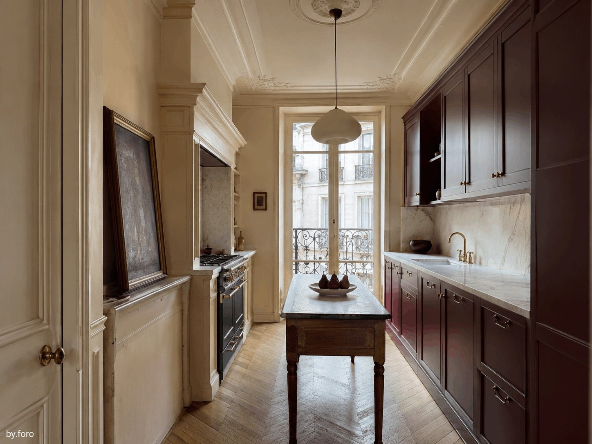
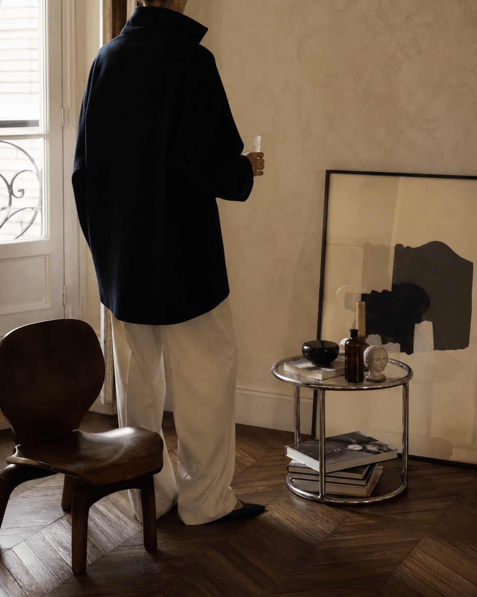
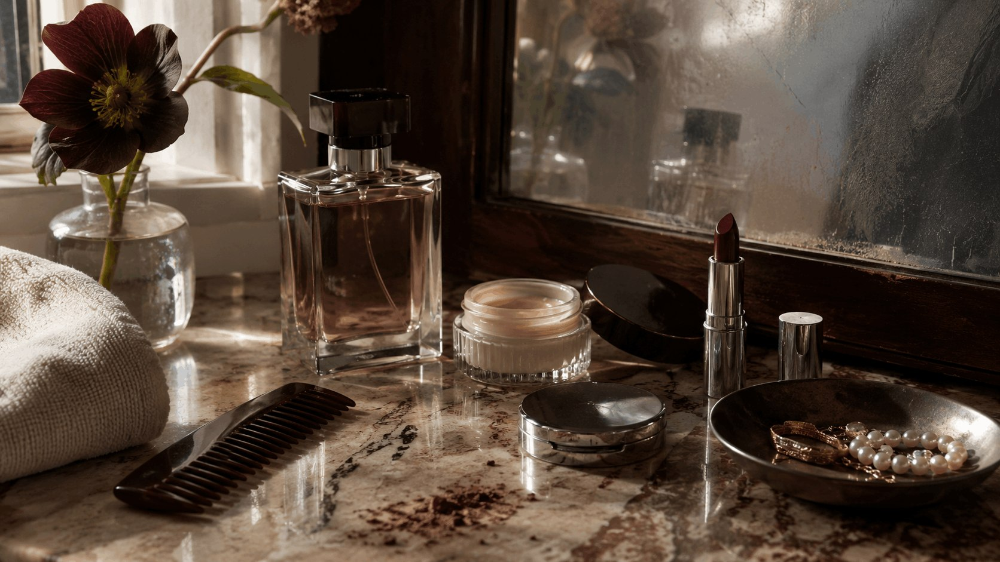
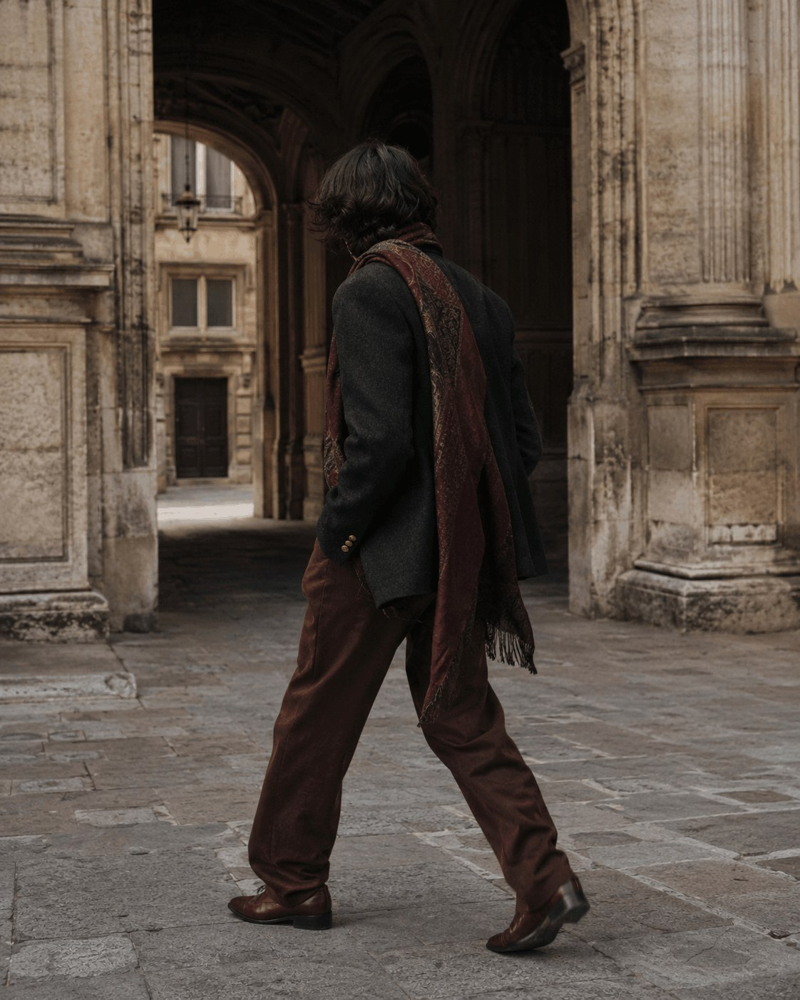
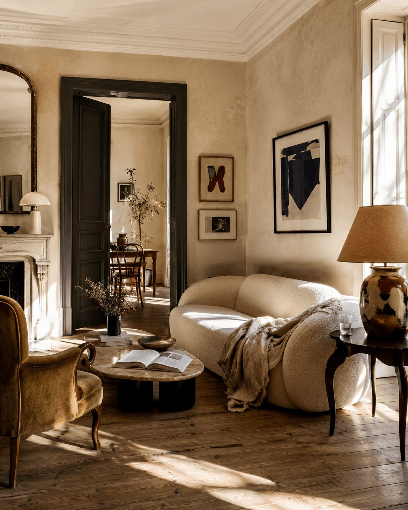
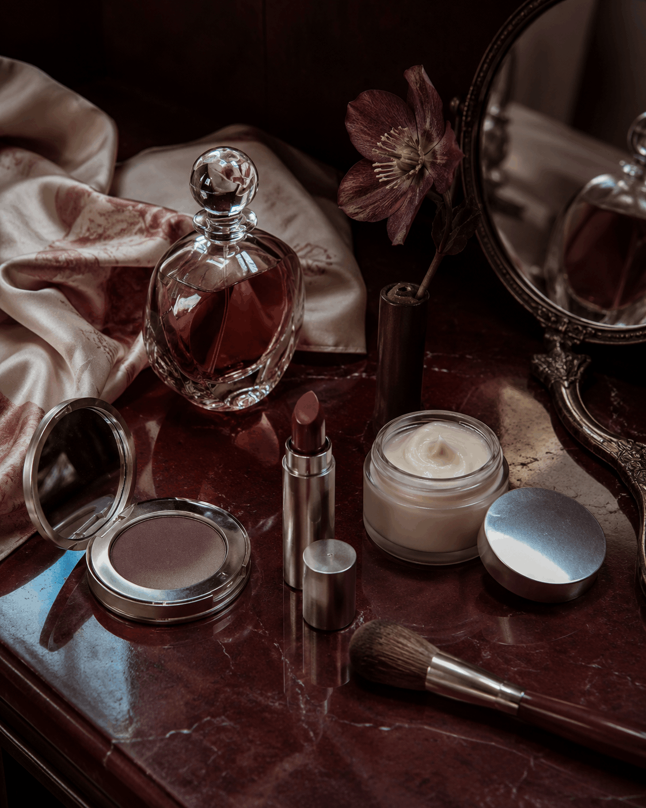
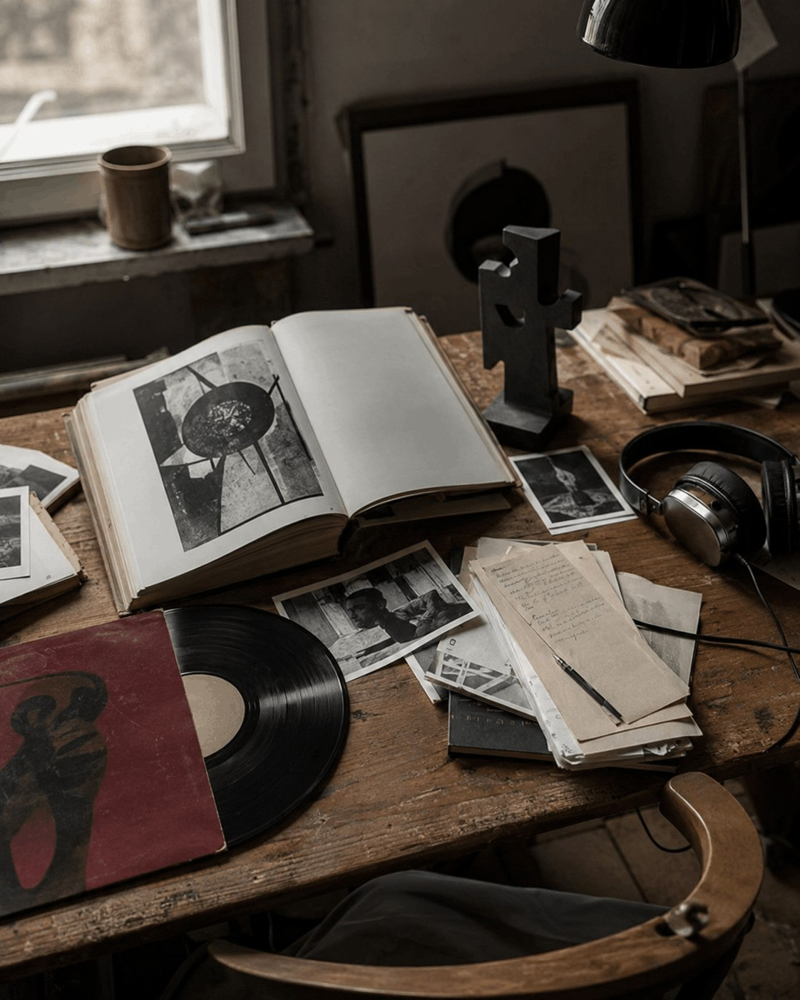

Home · Colour
The Most Beautiful Kitchen Colour Combinations Right Now
Ten palettes that give cabinetry, stone and timber more depth and permanence.
Read storyA visual journal for considered living
Fashion, interiors, beauty and culture selected for character, intelligence and staying power.

Latest stories

Home · Colour
Ten palettes that give cabinetry, stone and timber more depth and permanence.
Read storyFashion · Essay
A quieter approach to personal style built around proportion, repetition and self-knowledge.
Read story
Beauty · Objects
Why the objects we keep close can be useful, intimate and visually exact at once.
Read storyCulture · Point of view
A case for looking longer, collecting references and resisting instant certainty.
Read storyThe FORO Index · 01
A recurring register of colours, objects, materials, places and ideas shaping the by.foro mood.
Deep red becomes quieter when it is treated as architecture rather than decoration.
Useful objects should still have a point of view when they are switched off.
Perfection is less convincing than a surface that records use.
Low light, unfinished arrangements and the calm before people arrive.
Wearing and using the same forms until they become recognisably yours.
Departments
Each department has its own rhythm, but the standard stays the same: restraint, texture and a reason to return.

01 · Fashion

02 · Home

03 · Beauty

04 · Culture